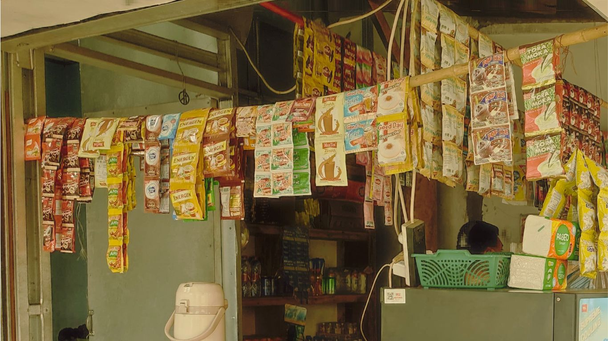
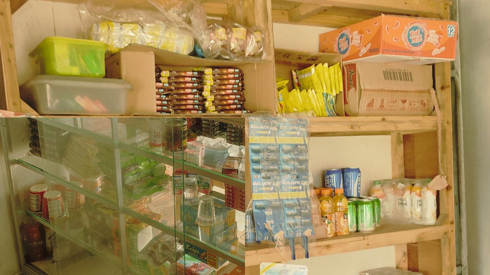
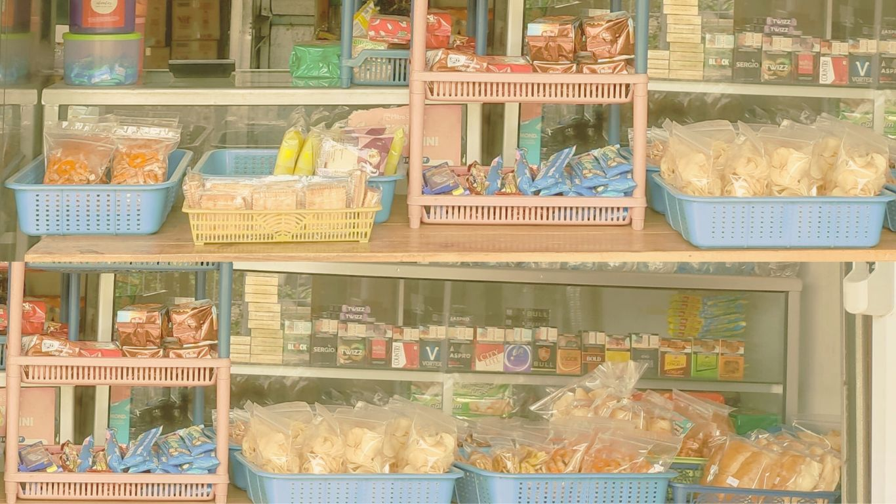

Minuman

Selamat datang di Warung Kopi Hugo, tempat di mana Anda dapat menikmati berbagai pilihan minuman
panas dan es yang lezat. Nikmati kehangatan dengan menu minuman panas kami, seperti Kopi Hitam Kapal
Api, Kopi Luwak, atau Kopi Susu ABC yang creamy. Jika Anda suka variasi, coba Kopi Capucino atau
Nutrisari Jeruk Peras yang menyegarkan.
Untuk penggemar es, kami juga menyediakan beragam pilihan minuman segar, seperti Es Susu Dancow, Es
Teh Manis, atau Es Good day Capucino yang menyegarkan. Temukan pilihan favorit Anda di Warung Kopi
Hugo, di mana cita rasa dan kualitas bertemu.
Semoga Anda menikmati pengalaman bersantap di Warung Kopi Hugo, tempat yang hangat dan ramah untuk
berkumpul dan menikmati waktu bersama teman atau keluarga. Terima kasih atas kunjungan Anda, dan
kami berharap dapat menyajikan Anda dengan pelayanan terbaik kami.
Makanan

Selamat datang di Warung Kopi Hugo, tempat di mana kami menyajikan beragam pilihan
makanan instan yang lezat dan praktis. Nikmati sensasi kelezatan Mie Indomie dalam berbagai
varian, mulai dari Mie Goreng hingga Mie Rebus dan Mie Soto yang khas. Serta, nikmati
kepraktisan Pop Mie Baso, Pop Mie Ayam, dan Pop Mie Goreng yang siap menggoyang lidah Anda.
Untuk penggemar cita rasa internasional, kami juga menyajikan Mi Goreng Instant Penang, Ramen
Korea Pedas, dan Sup Instan Tom Yum yang akan memanjakan selera Anda. Jangan lewatkan juga Nasi
Goreng Instan Spesial, Kwetiaw Goreng Instan Seafood, dan Mie Goreng Instant Rasa Ayam Bakar
yang siap menggugah selera Anda.
Kami juga memiliki pilihan makanan instan yang lebih tradisional, seperti Nasi Kuning Instan
Komplit, Soto Ayam Instan, Mi Instan Seafood, dan Mi Kuah Instan Rasa Soto. Untuk camilan
praktis, coba Roti Instan Panggang yang dapat dinikmati kapan saja.
Seluruh menu makanan instan ini disajikan dengan cita rasa yang otentik dan kualitas terjamin.
Kami berharap dapat memberikan pengalaman kuliner instan yang memuaskan bagi pelanggan setia
Warung Makan Instan Hugo. Selamat menikmati!
Snack

Selamat datang di Kopi Warung Hugo, tempat di mana aroma kopi segar dan suasana hangat menyambut
Anda setiap hari. Kami menghadirkan berbagai varian kopi pilihan dari berbagai daerah, mulai
dari kopi lokal hingga kopi internasional yang disajikan dengan keahlian dan ketelatenan.
Nikmati pengalaman unik menikmati secangkir kopi nikmat sambil menikmati cemilan ringan atau kue-kue
istimewa yang kami sediakan. Bersantailah dan nikmati waktu Anda di Warung Kopi Hugo, tempat di
mana kopi bukan sekadar minuman, tetapi juga sebuah pengalaman.
Top Up

Selamat datang di Kopi Warung Hugo, Kami menyediakan berbagai opsi top up e-toll dan layanan
keuangan lainnya untuk memudahkan Anda.
Anda dapat melakukan top up e-toll melalui berbagai bank, termasuk Mandiri, BCA, Brizzi, dan
BNI.
Selain itu, kami juga menerima pembayaran melalui layanan keuangan digital seperti Dana,
OVO, GoPay, dan Shopee Pay. Tidak hanya itu, Anda juga dapat melakukan pembelian pulsa paket
data, token listrik, transfer uang, tarik tunai, dan banyak layanan lainnya melalui kami.
Temukan kemudahan dan kenyamanan dalam bertransaksi dengan kami